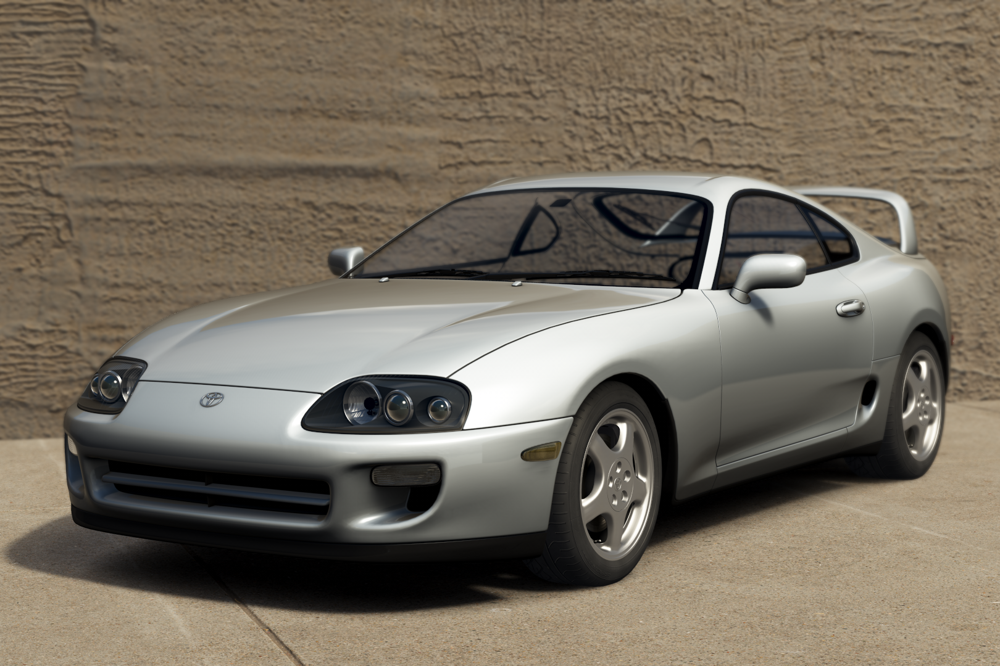
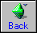

1998 Toyota Supra RZ converted from Gran Turismo 7 to Assetto Corsa.
I started this project some time ago. Exterior is done (somewhat) but I haven't yet started converting the interior. Currently on hold due to time constraints.
 Get me outta here!